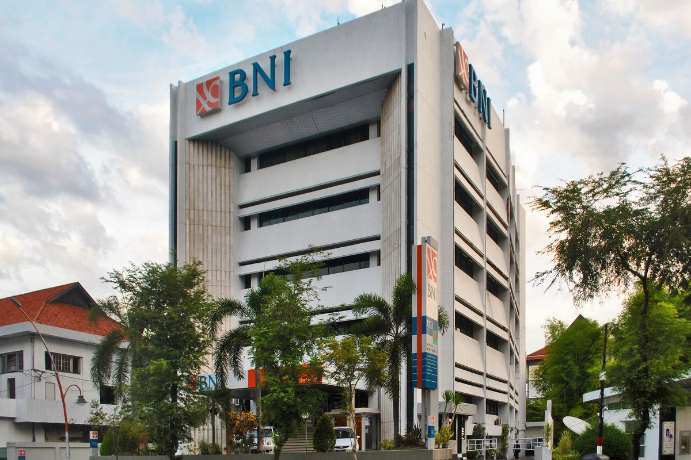
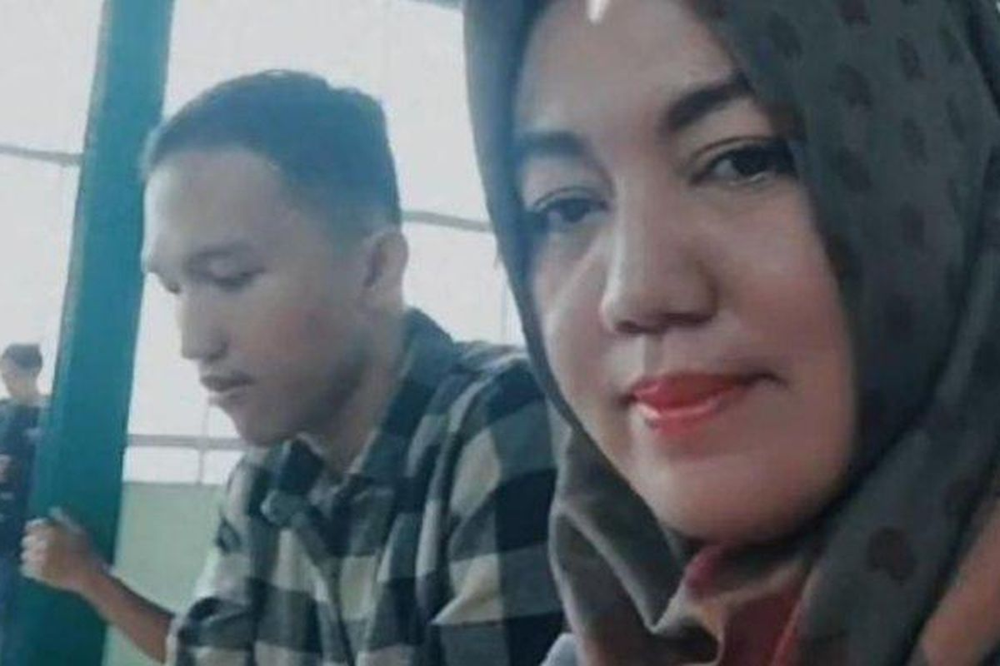

Publik dihebohkan dengan kasus pernikahan anak di bawah umur di Lombok Tengah, Nusa Tenggara Barat (NTB). Hal ini disebabkan oleh umur mereka yang masih terlampau muda. Mempelai wanita berinisial YL baru berumur 15 tahun, sedangkan mempelai pria berinisial RN berusia 16 tahun. Melansir Kompas.com edisi sebelumnya, mereka sempat menikah secara adat tiga minggu sebelum video tersebut viral.

PT Bank Negara Indonesia (Persero) Tbk (BBNI) melaporkan Dana Pihak Ketiga (DPK) dari segmen menengah ke atas dengan minimal penempatan dana sebesar Rp 5 miliar mengalami pertumbuhan. Pertumbuhan DPK BNI di atas Rp 5 miliar hingga April 2025 mencapai 16 persen dibandingkan periode yang sama tahun lalu (YoY).

Mahasiswa angkatan 2024 ini meninggal diduga akibat mengalami kekerasan oleh seniornya saat mengikuti pendidikan dasar (diksar) organisasi Mahasiswa Ekonomi Pencinta Lingkungan (Mahepel). Menanggapi peristiwa ini, seratusan mahasiswa FEB Unila menggelar aksi unjuk rasa di depan Gedung Rektorat Unila, Rabu (28/5/2025) sore.

Mahasiswa FEB UGM Tabrak Mahasiswa FH UGM hingga Meningga

Ketika Belgia Dituduh Mencuri Angin dari Belanda...
.jpg)